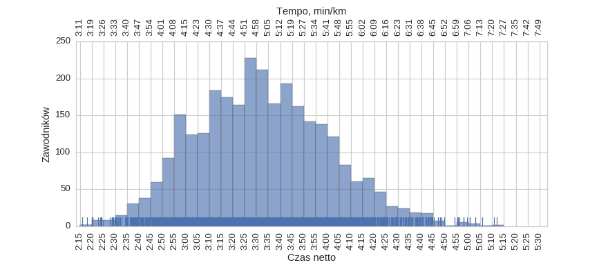
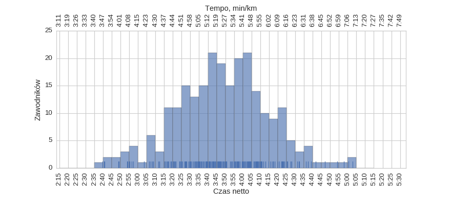
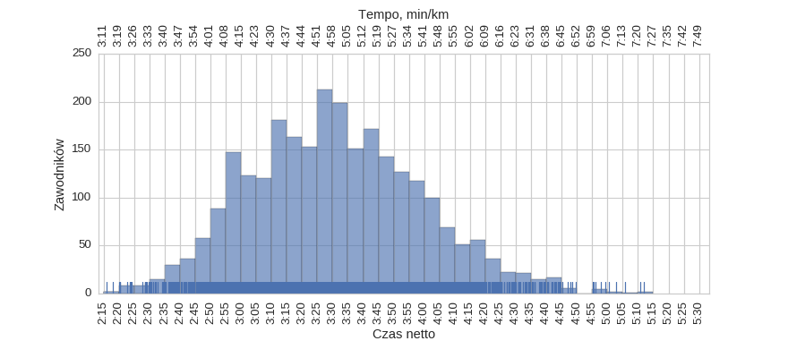
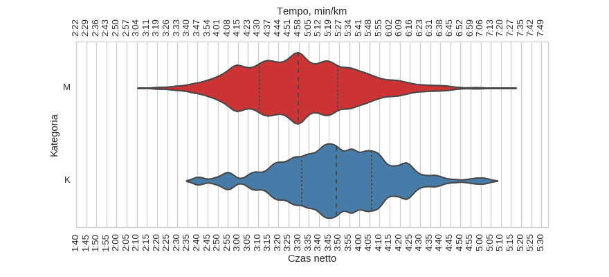

San Sebastian Marathon (2014)
Histogramy
Klasyfikacja generalna

| mean | std | min | 25% | 50% | 75% | max | |
|---|---|---|---|---|---|---|---|
| czas | 3:32:19 | 0:28:26 | 2:15:55 | 3:11:54 | 3:30:35 | 3:51:07 | 5:11:50 |
kobiety

| mean | std | min | 25% | 50% | 75% | max | |
|---|---|---|---|---|---|---|---|
| czas | 3:48:34 | 0:26:39 | 2:39:47 | 3:31:40 | 3:48:46 | 4:06:09 | 5:02:51 |
mężczyźni

| mean | std | min | 25% | 50% | 75% | max | |
|---|---|---|---|---|---|---|---|
| czas | 3:30:49 | 0:28:07 | 2:15:55 | 3:10:41 | 3:29:42 | 3:49:21 | 5:11:50 |
Wykresy rybkowe
wg płci

| czas | count | |||||||
|---|---|---|---|---|---|---|---|---|
| mean | std | min | 25% | 50% | 75% | max | ||
| plec | ||||||||
| K | 3:48:34 | 0:26:39 | 2:39:47 | 3:31:40 | 3:48:46 | 4:06:09 | 5:02:51 | 245 |
| M | 3:30:49 | 0:28:07 | 2:15:55 | 3:10:41 | 3:29:42 | 3:49:21 | 5:11:50 | 2659 |
wg kategorii

| czas | count | |||||||
|---|---|---|---|---|---|---|---|---|
| mean | std | min | 25% | 50% | 75% | max | ||
| kat | ||||||||
| ABSM | 2:39:10 | 0:16:52 | 2:15:55 | 2:28:47 | 2:35:36 | 2:43:26 | 3:14:49 | 20 |
| P40F | 3:54:21 | 0:23:37 | 3:12:22 | 3:37:17 | 3:50:07 | 4:07:14 | 5:02:51 | 94 |
| P40M | 3:31:54 | 0:26:44 | 2:34:29 | 3:11:56 | 3:29:42 | 3:49:31 | 5:11:50 | 1057 |
| P50F | 4:09:23 | 0:16:35 | 3:41:16 | 4:00:55 | 4:04:41 | 4:15:58 | 4:54:09 | 21 |
| P50M | 3:44:49 | 0:24:35 | 2:46:00 | 3:27:10 | 3:43:54 | 4:00:55 | 4:56:01 | 360 |
| SENF | 3:49:13 | 0:23:25 | 2:49:06 | 3:34:59 | 3:47:31 | 4:08:08 | 4:46:59 | 87 |
| SENM | 3:30:04 | 0:26:35 | 2:17:56 | 3:10:34 | 3:29:20 | 3:46:22 | 4:59:22 | 1097 |
| V35F | 3:07:22 | 0:17:13 | 2:40:34 | 2:54:13 | 3:07:09 | 3:23:59 | 3:29:31 | 9 |
| V35M | 2:42:10 | 0:13:49 | 2:20:25 | 2:30:13 | 2:38:30 | 2:51:45 | 3:19:07 | 33 |
| V40F | 3:25:48 | 0:29:55 | 2:48:45 | 3:04:29 | 3:18:35 | 3:58:02 | 4:01:19 | 8 |
| V40M | 2:49:03 | 0:14:32 | 2:20:08 | 2:38:36 | 2:47:24 | 2:58:42 | 3:19:27 | 34 |
| V45F | 3:26:16 | 0:25:47 | 2:55:06 | 3:10:51 | 3:23:53 | 3:32:38 | 4:22:27 | 11 |
| V45M | 2:51:01 | 0:14:53 | 2:28:35 | 2:41:16 | 2:48:59 | 2:57:53 | 3:29:31 | 21 |
| V50M | 3:07:24 | 0:23:53 | 2:38:25 | 2:46:42 | 3:09:00 | 3:14:05 | 3:59:09 | 18 |
| V55F | 3:51:50 | 0:16:36 | 3:29:32 | 3:38:54 | 3:56:43 | 4:04:16 | 4:08:18 | 6 |
| V55M | 3:19:13 | 0:26:55 | 2:49:19 | 2:58:55 | 3:08:35 | 3:35:22 | 4:08:28 | 14 |
Menu
HistogramyWykresy rybkowe
∙ wg płci
∙ wg kategorii
Dystans: 42.195 km
Liczba uczestników: 2904
Wygenerowano: 2016-03-28 21:44:26.292087